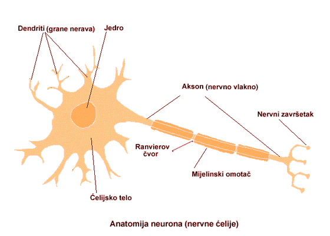
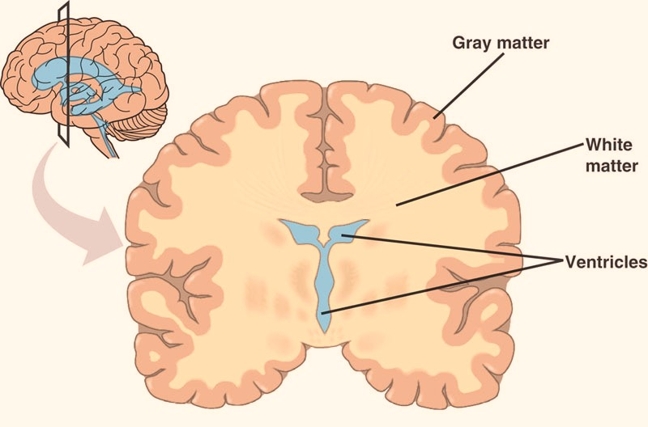
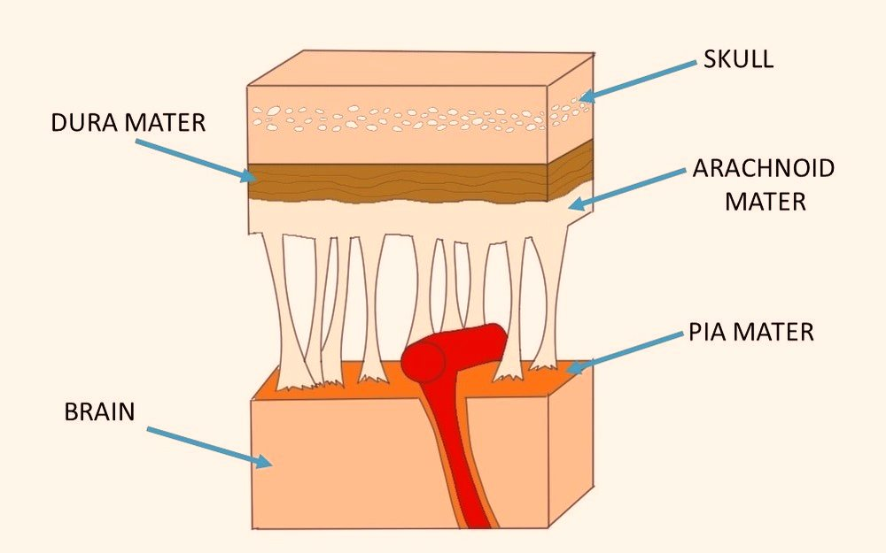
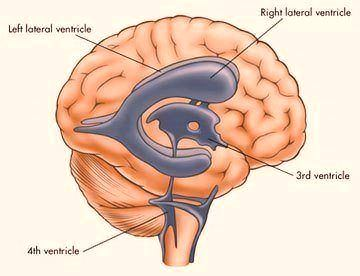

Ćelijska struktura
U mozgu se nalaze dva tipa ćelija: nervne i glijalne ćelije.Nervne ćelije (neuroni) se od ostalih ćelija razlikuju po tome što imaju sposobnost provodljivosti nervnih impulsa. Ljudski mozak je izgrađen od oko 10 milijardi nervnih ćelija. Svaka nervna ćelija se sastoji od tela neurona i dva tipa nastavaka: dendrita i aksona. Telo neurona (soma) sadrži jedro (u kome je smeštena DNK), endoplazmatični retikulum i ribozome (za sintezu proteina) i mitohondrije (za dobijanje energije) – ono obavlja sve one funkcije koje su ćeliji neophodne da bi preživela. Aksoni i dendriti služe za komunikaciju između ćelija. Dendriti su kratki, razgranati nastavci koji sprovode nadražaj ka telu nervne ćelije. Akson (neurit, nervno vlakno) prenosi nadražaj od tela neurona ka sledećem neuronu, on može biti prekriven posebnom opnom koja je izgrađena od glijalnih ćelija (oligodendrocita) i koja ubrzava protok impulsa kroz akson. Svaka nervna ćelija je preko sinapsi (veza između aksona jedne i dendrita druge ćelije) povezana sa oko 10.000 drugih nervnih ćelija.
Glijalne ćelije (glije) imaju niz funkcija koje omogućavaju opstanak i pravilno funkcionisanje nervnih ćelija: potporna (svojim produžecima grade potpornu mrežu moždanog tkiva), izolatorna (u predelu sinapse vrše električnu izolaciju), odbrambena (mogu da se transformišu u makrofage), transportna (transportuju hranljive materije od krvnih sudova do nervnih ćelija mozga), imaju ulogu u lokalnoj homeostazi, vrše fagocitozu nepotrebnih materija, grade mijelinski omotač aksona. U mozgu ih ima oko 10 puta više nego nervnih ćelija.
U mozgu možemo razlikovati svetlije i tamnije delove. Tamni deo je siva masa koju grade tela nervnih ćelija, dendriti, početni delovi aksona i glijalne ćelije. Svetli delovi su bela masa koju čine aksonski produžeci nervnih ćelija sa oligodendrocitima i dendriti. Siva masa se uglavnom nalazi na površini, a bela u unutrašnjosti mozga.

Mozak je okružen i zaštićen lobanjom i pomoću tri membrane (meninge). Spoljašnja membrana je tvrda, naleže na koštani zid lobanje i naziva se dura mater . Zalazi među pojedine delove mozga: u rascep između hemisfera, između malog mozga i moždanog stabla. Ispod ove opne nalazi se paučinasta membrana (arhanoidea) , a između njih je kapilarni prostor. Arhanoidea je tanka i prozračna i prelazi preko žlebova i udubljenja u mozgu. Treća membrana je meka i naziva se pia mater . Ona naleže na površinu mozga i uvlači se u sva udubljenja, žlebove i pukotine. Između arhanoidee i pia mater nalazi se subarhanoidalni prostor ispunjen cerebrospinalnom tečnošću - likvorom . Ova tečnost štiti mozak od potresa, a ima i ulogu u transportu materija. Mozak sadrži i četiri moždane komore koje su ispunjene likvorom (leva, desna, treća i četvrta moždana komora).
  Mozak čine: rombasti mozak (rhombencephalon), srednji mozak (mesencephalon) i prednji mozak (prosencephalon).